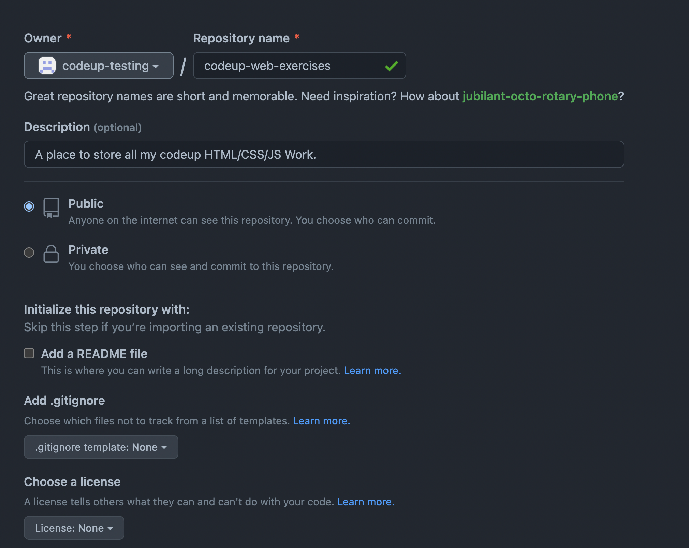
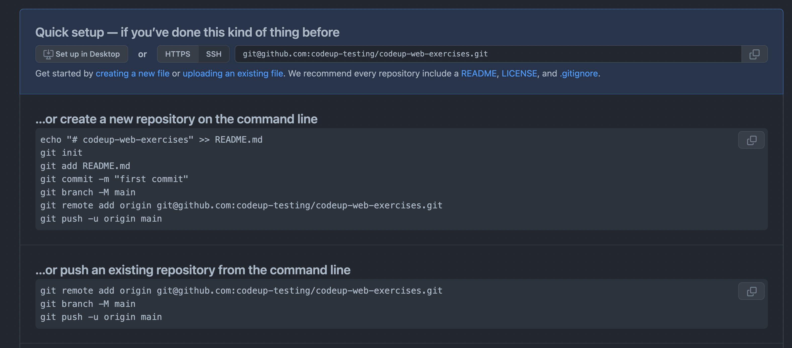

Exercise:
- Create a folder named codeup-web-exercises (if you haven't already).
-
Create a new remote repository on GitHub named codeup-web-exercises this repository will be useful to upload our code to
GitHub.com.
Create Repo Screen

Once your settings match select the confirm button at the bottom
Post Create Repo Screen

- Create a file named welcome.html file with the structure of an html document so that it that displays the text "Hello, World!".
- Finally, commit the changes to your git repository, and push to GitHub.
Git Command Line Interface Guide